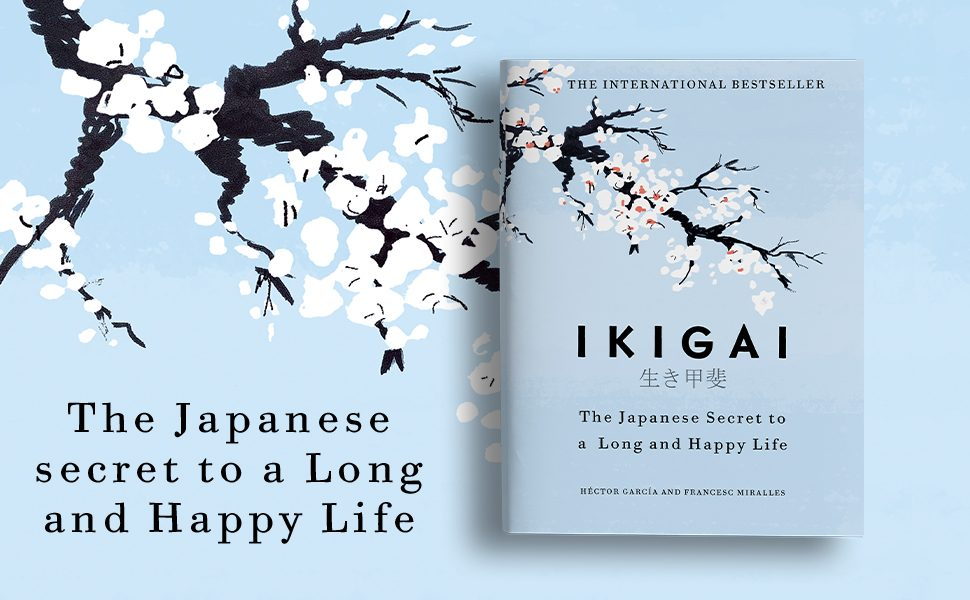

Library › Psychology & People
Ikigai — Summary & Key Lessons

The Japanese secret to a long and happy life — lessons from the world's longest-living village.
📖 OPEN THE FULL INTERACTIVE BREAKDOWN →🌐 Read it in Hindi, Hinglish, Gujarati, Tamil & 22 more languages — free, with audio.
💡 The Big Idea
The authors traveled to Ogimi, Okinawa — the village with the world's highest concentration of centenarians — to decode why its residents live so long and so happily. The answer isn't one thing but a lifestyle woven around ikigai (a reason for being): never fully retiring, moving gently all day, eating to 80% full (hara hachi bu), nurturing lifelong friend groups (moai), managing stress through rituals, and staying in flow through absorbing work and hobbies. Longevity, it turns out, is a byproduct of purpose plus community plus motion.
🧠 The 6 Key Lessons
Lesson 1: Find Your Ikigai: The Four Circles
Chapters 1–2: Ikigai & Anti-Aging Secrets
Ikigai lives at the intersection of four circles: what you LOVE, what you're GOOD AT, what the world NEEDS, and what you can be PAID FOR. Miss one and something's off — passion without pay is a hobby; pay without passion is a grind; skill without need is irrelevant. Okinawans often can't even translate 'retirement' — their ikigai (tending a garden, teaching a craft, feeding a family) continues to the end, and the continuity itself protects them: purpose measurably lowers stress hormones, inflammation, and mortality risk. You don't find ikigai in an afternoon; you circle it by noticing what you do when nobody's paying or watching.
📖 Example: The book's interviews in Ogimi: a 92-year-old still making traditional baskets daily, centenarians tending vegetable plots every morning, a 99-year-old who wakes at dawn for her calligraphy. Asked about retirement, they laugh. Contrast the well-documented… Read the full example →
⚡ Do this: Draw the four circles and fill them honestly. Where at least three overlap, you have a working hypothesis — spend two hours in it this week and observe your energy.
Lesson 2: Flow: The Happiness of Absorption
Chapter 4: Flow in Everything You Do
The happiest moments aren't passive pleasure — they're total absorption: the state Csikszentmihalyi named flow, where time dissolves, self-consciousness vanishes, and the activity is its own reward. Flow needs three conditions: a challenge slightly above your skill (too easy = boredom, too hard = anxiety), a clear goal, and immediate feedback — with distraction as its assassin (every phone-glance resets the dive). The Japanese craft traditions — takumi artisans, sushi masters, tea ceremony — are flow institutionalized: one thing, done with complete attention, for decades. A life strategy follows: maximize hours in flow-producing activities, and happiness takes care of itself.
📖 Example: The authors profile Japan's takumi: a master craftsman who has made the same style of object for fifty years and still refines it, Steve Jobs' beloved Kyoto artisans, and Jiro Ono (of sushi documentary fame) who at 90+ still experiences his work as joyful… Read the full example →
⚡ Do this: Identify your two most reliable flow activities. Schedule 90 protected, phone-free minutes for one of them this week — single task, clear goal, no interruptions.
Lesson 3: Hara Hachi Bu: The 80% Rule
Chapter 6: The Longevity Diet
Okinawans say 'hara hachi bu' before meals — eat until 80% full — a cultural calorie restriction without counting. Their traditional diet: enormous variety (up to 18 different foods a day), vegetable-heavy, tofu and sweet potato as staples, fish more than meat, sugar rare, and portions modest served on many small plates. The science parallel: sustained mild caloric restriction is one of the few interventions repeatedly shown to extend lifespan across species, likely via reduced oxidative stress. Add their green tea and jasmine tea rituals, and the eating pattern doubles as a slow-down practice — the anti-inflammatory diet and the anti-stress ceremony in one.
📖 Example: The numbers from Okinawa's traditional generation: dramatically lower rates of heart disease, breast and prostate cancer, and dementia than the West — with the elders consuming roughly 1,800–1,900 calories daily. Tellingly, younger Okinawans adopting Western… Read the full example →
⚡ Do this: Practice hara hachi bu at one meal daily: serve 20% less, eat slowly, stop at 'no longer hungry' rather than 'full.' Add one extra vegetable variety per day this week.
Lesson 4: Moai: Your Tribe Is a Longevity Drug
Chapters 1, 9: Community
Every Ogimi resident belongs to a moai — a small, lifelong mutual-support group that meets constantly, pools small dues, celebrates together, and catches whoever stumbles (financially or emotionally). The security is biochemical: strong social bonds are among the most powerful longevity predictors known — rivaling or beating exercise and diet in meta-analyses — while loneliness damages health on par with heavy smoking. The moai removes the modern anxiety of facing catastrophe alone; everyone knows they will be caught. Community in Okinawa isn't a nice-to-have after health; it IS health.
📖 Example: The authors' birthday party in Ogimi: the whole village celebrates every elder's milestone with singing, dancing, and games — a 99th birthday treated as a communal achievement. Members of one moai interviewed had been meeting for over 90 years — friends… Read the full example →
⚡ Do this: Build a micro-moai: pick 3–5 people, propose a fixed rhythm (weekly walk, monthly dinner), and protect it like a medical appointment — because functionally, it is one.
Lesson 5: Move Gently, All Day, Forever
Chapter 5: Masters of Longevity & Gentle Movement
No Okinawan centenarian runs marathons — and none sits still. The pattern is constant low-intensity motion woven into life: gardening, walking to neighbors, housework, getting up and down from floor seating dozens of times daily (a stealth mobility workout into the 100s). The book surveys Japan's gentle disciplines — radio taiso (the 5-minute national broadcast calisthenics done in groups each morning), yoga, tai chi, qigong — all sharing the same signature: daily, moderate, social, and sustainable for seventy years. The lethal pattern is the modern one: total sedention punctuated by occasional intense exercise. Metabolisms are built for the opposite.
📖 Example: Radio taiso: since 1928, millions of Japanese — schoolchildren to factory workers to nursing-home residents — start the day with the same five minutes of broadcast exercises, together. In Ogimi, the authors couldn't find elders who 'worked out'; they found… Read the full example →
⚡ Do this: Engineer motion into the day: stand or walk during calls, sit on the floor once daily (getting up is the exercise), take a 10-minute walk after each meal, and do 5 minutes of morning stretches — daily, forever, gently.
Lesson 6: Wabi-Sabi & Resilience: Bend, Don't Break
Chapter 8: Resilience and Wabi-Sabi
The final Okinawan trait is emotional: resilience built from acceptance. Wabi-sabi finds beauty in imperfection and impermanence (the cracked, mended teacup is MORE valuable — kintsugi); ichi-go ichi-e treasures each gathering as unrepeatable ('this moment exists only now'); and the Stoic overlap is explicit — negative visualization, focusing only on what you control, and antifragility: arranging life to gain from disorder rather than merely survive it. Okinawan elders interviewed had survived war, occupation, and loss; their shared refrain was a soft one: worry less, accept what comes, keep tending the garden. The bamboo survives the storm that breaks the oak.
📖 Example: The authors note Okinawa's history — the bloodiest battle of the Pacific war was fought on this soil; many centenarians lost everything mid-life. Yet the village's motto, posted near the community center, reads like a prescription: 'At 80 you are merely a… Read the full example →
⚡ Do this: Adopt one practice: each morning, name the one thing in today you control and release the rest; each gathering this week, treat as ichi-go ichi-e — fully present, phone away, as if unrepeatable. Because it is.
✅ 5-Step Action Plan
- Map your four circles; test the overlap with two real hours this week.
- Protect 90 phone-free minutes of flow in your best activity.
- Practice hara hachi bu at one meal a day; widen food variety.
- Found your micro-moai with a fixed, protected rhythm.
- Weave gentle motion through every day; accept what you don't control.
💬 Best Quotes from Ikigai
- “Only staying active will make you want to live a hundred years.”
- “Hara hachi bu — eat until you are 80 percent full.”
- “The happiest people are not the ones who achieve the most. They are the ones who spend more time in flow.”
Interactive version: mark lessons as read, listen in your language, share quote cards.